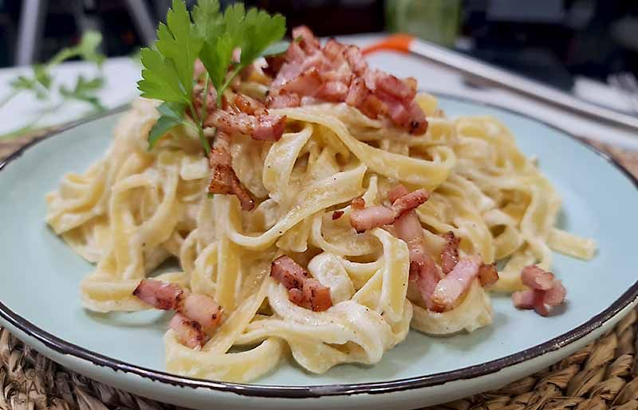

Pasta
La pasta es un alimento que no falta en nuestra gastronomía. Hay mil maneras de preparar un plato de pasta y hasta los niños adoran este ingrediente. Aquí te presento unas deliciosas recetas de pasta con las que sorprender a tus invitados o a tu familia en cualquier ocasión. Estos platos no tienen que faltar en nuestro menú por su sencillez y por la rapidez de preparación.
La pasta es un conjunto de alimentos preparados con una masa cuyo ingrediente básico es la sémola, mezclada con agua, y a la cual se puede añadir sal, huevo u otros ingredientes, conformando un producto que generalmente se cuece en agua hirviendo.
